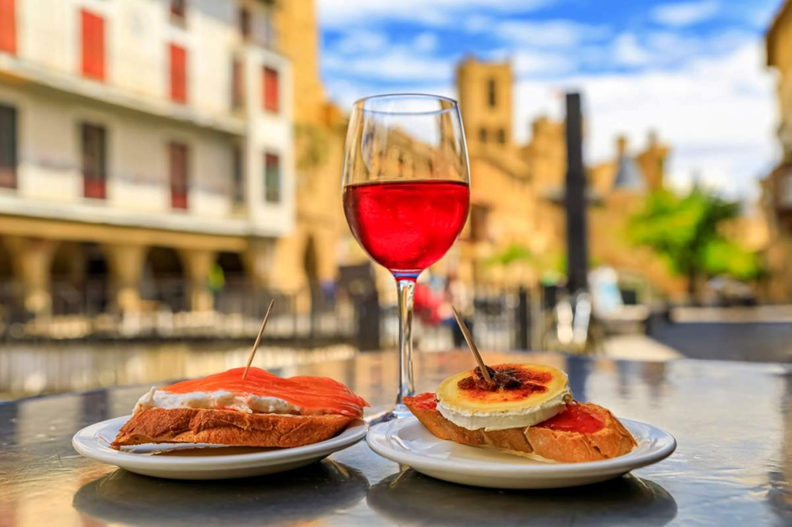

Gastronomía de Navarra
La gastronomía navarra es una de las más reconocidas del norte de España. Destaca por la calidad de sus verduras, carnes y productos tradicionales. Algunos platos típicos son el cordero al chilindrón, los espárragos de Navarra y los pimientos del piquillo.

Platos típicos
- Pochas a la navarra
- Cordero al chilindrón
- Trucha a la navarra
Productos tradicionales
- Espárragos de Navarra
- Pimientos del piquillo
- Rellenos de carne
- Rellenos de bacalao
- A la brasa
- Queso Roncal
Productos típicos de Navarra
| Producto | Descripción |
|---|---|
| Espárragos | Verdura blanca muy famosa por su calidad. |
| Pimientos del piquillo | Pimientos rojos asados y dulces. |
| Queso Roncal | Queso elaborado con leche de oveja. |
| Pacharán | Licor tradicional elaborado con endrinas. |